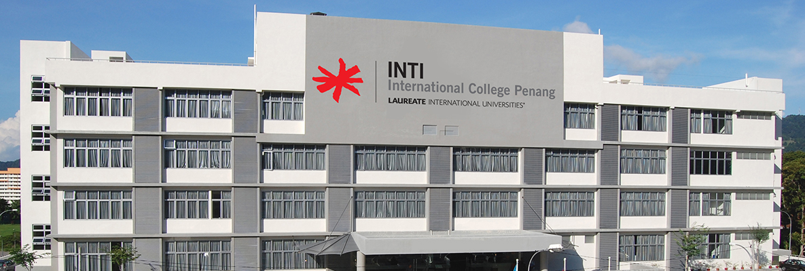

INTI International College Penang
Located amidst the beautiful parkland setting of Bukit Jambul's educational township, INTI International College Penang serves to promote Penang as a regional centre of excellence for quality education. The College holds true to its promise of delivering a vigorous holistic education by providing world-class programmes and a passionate teaching staff. Here you can also find a true balance between academics and the arts as we provide you with various opportunities and platforms to shine.
Facilities
INTI International College Penang offers a myriad of facilities which includes:Classroom Counselling Area
Science Lab Dining Area & Cafeteria
Lecture Theatre Library
Basketball Court Sports Center
-
Teaching & Learning Facilities
- Lecture theatres and classrooms
- Library
- Design Lab
- Academic consultation cubicle
- Engineering Lab
- Science Lab
- Group Study Cubicle
- Cyber Circle or The Round Table
- Campus-wide WiFi coverage
- Surau
- Halal food
- Convenience Stores
- Cafeteria and Lobby
Computing Facilities
Facilities for Muslim Students
Leisure Facilities